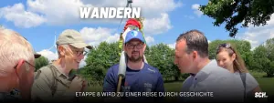
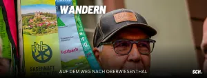
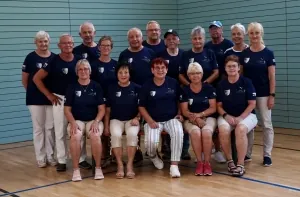

Liebe Wanderfreunde, liebe Besucher,herzlich willkommen bei der Abteilung Wandern des 1. SC 1911 Heiligenstadt e.V.
Seit unserer Gründung im Juli 2021 haben wir uns zu einer lebendigen Gemeinschaft von Wanderbegeisterten entwickelt. Dank unseres strukturierten Wanderplans und unserer gut organisierten Wanderrouten konnten wir immer mehr Menschen für das Wandern begeistern und in unserem Verein begrüßen.
Unsere Wanderungen bieten für jeden Geschmack und jedes Fitnesslevel etwas. Ob Sie die Natur bei einem gemütlichen Spaziergang genießen möchten oder eine anspruchsvolle Bergtour bevorzugen, wir haben das passende Angebot für Sie.
Hier sind einige unserer beliebtesten Wanderungen:
Der „Ibergklassiker“ führt durch malerische Landschaften und bietet atemberaubende Ausblicke auf die umliegenden Landschaft. Diese Wanderung ist auch für weniger geübte Wanderer geeignet.
Und wenn Sie mit Ihrer Familie oder Freunden eine entspannende Wanderung unternehmen möchten, wir bieten über das Jahr verteilt an jeden letzten Samstag im Monat eine geführte Wanderung an. Diese Wanderung führt durch dichte Wälder und ist auch für Kinder bestens geeignet.
Wir möchten Sie ermutigen, sich unserer Wandergemeinschaft anzuschließen und Teil unserer wachsenden Gemeinschaft zu werden. Wandern ist nicht nur eine großartige Möglichkeit, körperlich fit zu bleiben, sondern bietet auch die Chance, die Natur zu erleben und neue Freundschaften zu schließen. Nutz unseren Wanderplan und erfahrt mehr über unsere Aktivitäten und Wanderungen.
Wir freuen uns darauf, Sie bei einer unserer nächsten Touren begrüßen zu dürfen!
Hierzu haben wir unseren aktuellen Wanderplan für das Jahr 2025 erstellt.
zum Download des Wanderplan 2025.
News der Abteilung
 Mit dem Wandertagswimpel durchs Erzgebirge
Mit dem Wandertagswimpel durchs Erzgebirge

Etappe 8 wird zu einer Reise durch die Geschichte Wimpelwanderung erreicht nächsten Meilenstein
Wimpelwanderung erreicht nächsten Meilenstein

Auf dem Weg nach Oberwiesenthal Wimpelstab wird zum Staffelstab
Wanderabteilung blickt großen Ereignissen entgegen
Wimpelstab wird zum Staffelstab
Wanderabteilung blickt großen Ereignissen entgegen
 Wanderabteilung beim 35-jährigen Jubiläum des TGW
Ein bewegtes Wanderjahr 2025
122. Deutscher Wandertag 19. bis 22. September 2024
Wanderabteilung beim 35-jährigen Jubiläum des TGW
Ein bewegtes Wanderjahr 2025
122. Deutscher Wandertag 19. bis 22. September 2024

Ein Dankeschön an alle Wanderer 32. Thüringer Wandertag in Kammerforst Wanderausflug zum Tag des Wanderns 2024 31. Thüringer Wandertag in Ilfeld